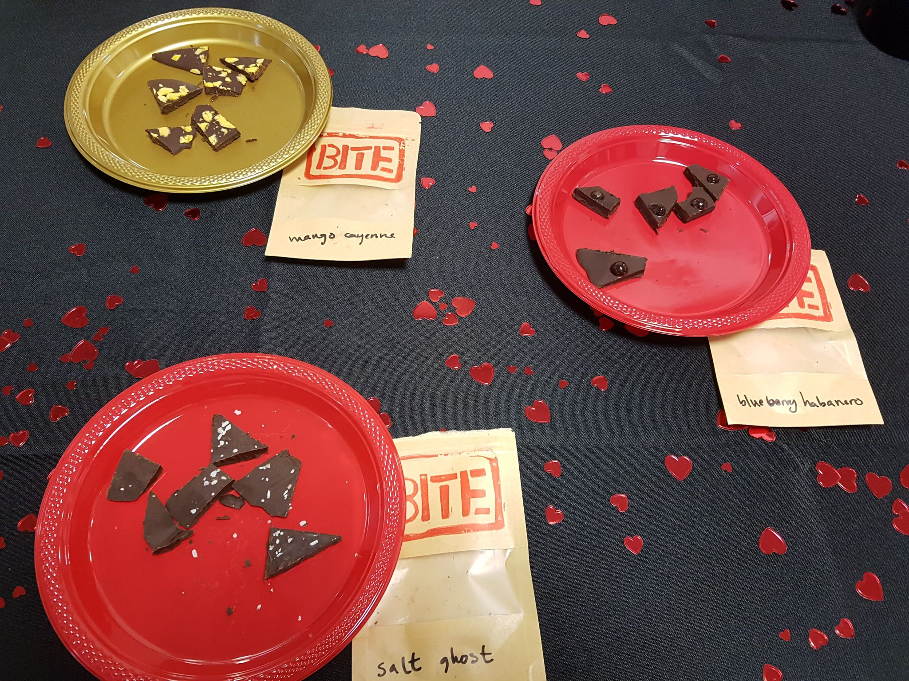
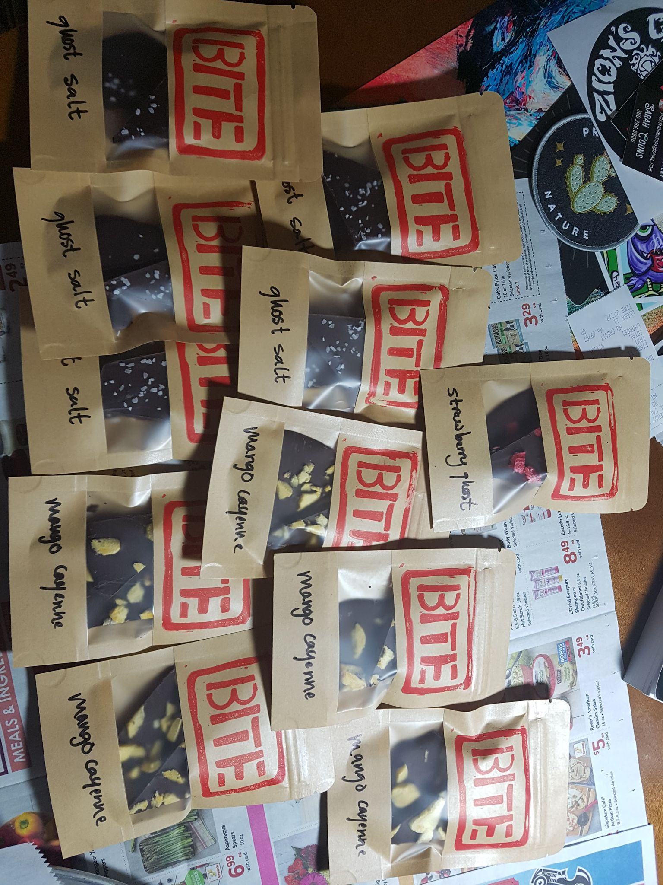
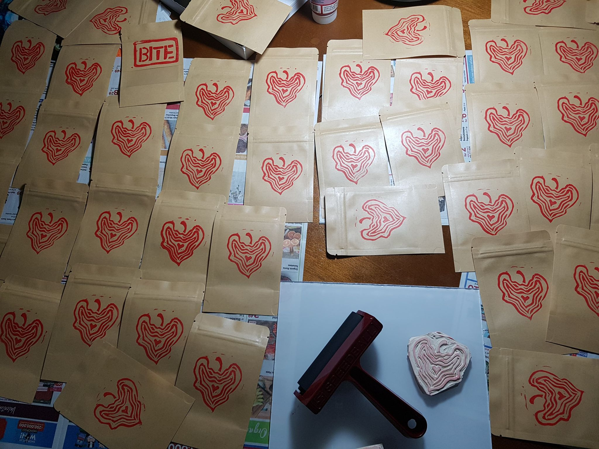
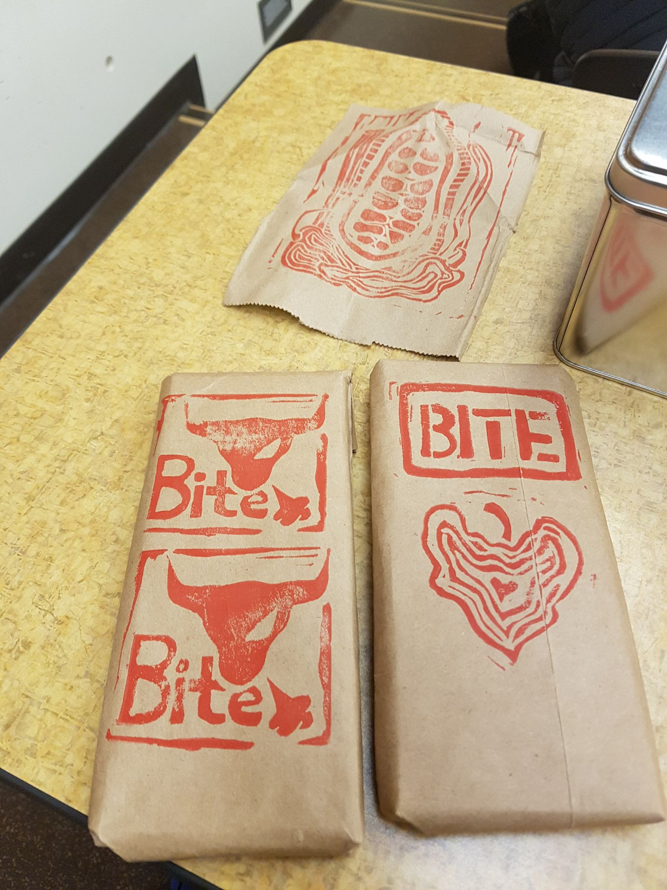
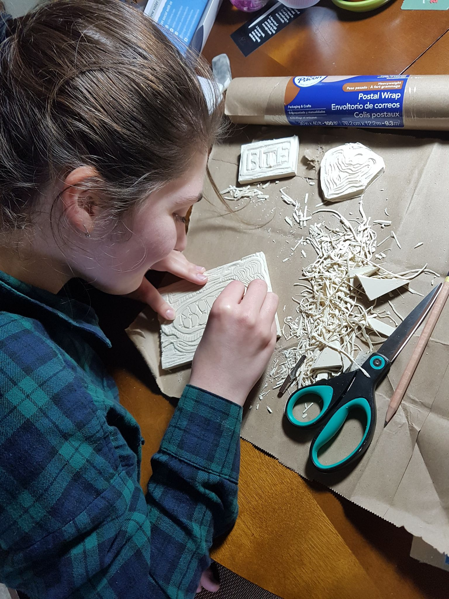
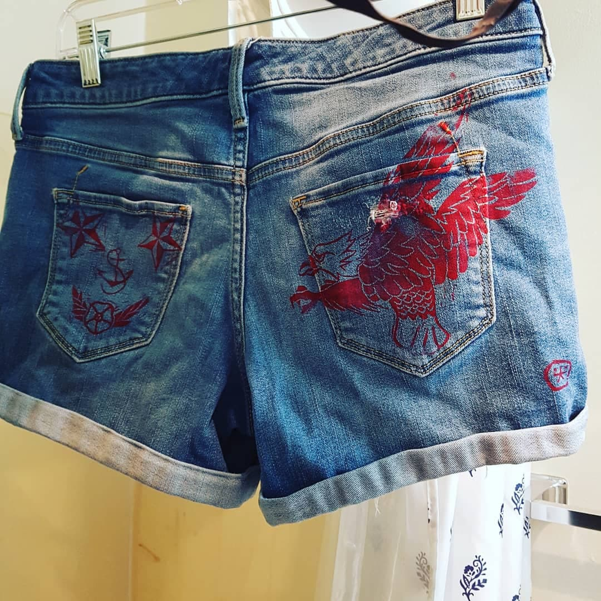

Entrepreneur's personal statement
As the daughter of an entrepreneur, I've always been intrigued by the idea of starting a business. After playing with several start-up ideas, I decided to pursue formal education with the Foster School of Business at the University of Washington. I enrolled in their "Creating a Company" series and founded Bite Chocolate Co. while simultaneuously networking within Seattle's entrepreneurship community. While currently I am not working on an active project, I'm always open to ideas...
Technical Advisor for MedID
Product Designer for Bite Chocolate Co.
     